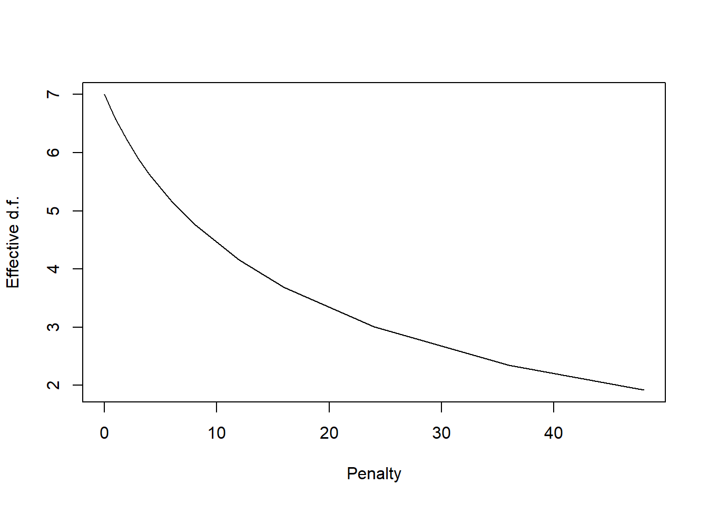
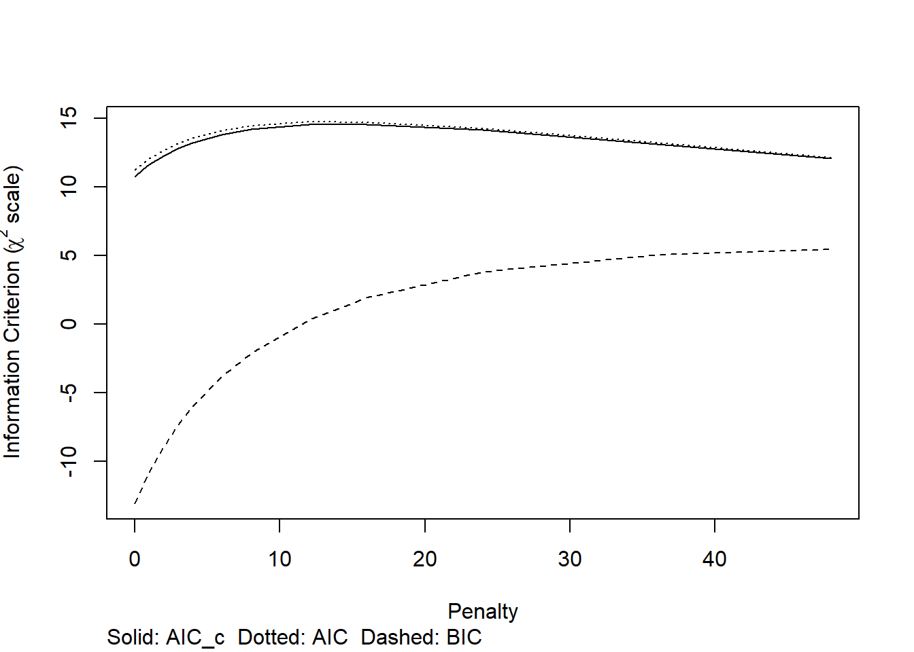

14 Estimation with External Information
Learning from external information
14.0.1 A local model with external information: Table 14.1
We can use external information to optimize the development of a prediction model with local or global applicability.
Table 14.1 provides the basic idea of model development with a focus on a locally applicable model.
| Modeling aspect | Local model | Global model |
|---|---|---|
| Model specification | Mixture of IPD and literature | Focus on consensus in literature |
| Model coefficients | IPD with literature as background | Meta-analysis of literature |
| Baseline risk | IPD | Literature |
The data: TBI (n=11022) and AAA (n=238) data sets
The impact data set includes patients with moderate / severe TBI for 15 studies (Steyerberg 2019). We can learn from the combined information in an Individual Patient Data Meta-Analysis (IPD MA).
The AAA data set includes a small set of patients undergoing elective surgery for Abdominal Aortic Aneurysm (Steyerberg 1995). We can learn from univariate information in the literature where many studies are available (Debray 2012). Specifically, we borrow information from the univariate coefficients in other studies and perform an adaptation of the multivariable coefficients in the AAA data set. The resulting model is stabilized such that better local and global performance is expected.
Code
# impact data come with metamisc package Debray; read here
data("impact", package = "metamisc")
impact$name <- as.factor(impact$name)
impact$ct <- as.factor(impact$ct)
impact$age10 <- impact$age/10 - 3.5 # reference 35-year-old patient, close to mean age
impact$motor_score <- as.factor(impact$motor_score)
impact$pupil <- as.factor(impact$pupil)
levels(impact$ct) <- c("I/II", "III/IV", "V/VI") # correct an error in Debray labels
impact$motor.lin <- as.numeric(impact$motor_score) # 1/2, 3, 4, 5/6 linear
impact$pupil.lin <- as.numeric(impact$pupil) # 1, 2, 3 linear
impact$study <- as.factor(ifelse(impact$name=="TINT", 1,
ifelse(impact$name=="TIUS", 2,
ifelse(impact$name=="SLIN", 3,
ifelse(impact$name=="SAP", 4,
ifelse(impact$name=="PEG", 5,
ifelse(impact$name=="HIT I", 6,
ifelse(impact$name=="UK4", 7,
ifelse(impact$name=="TCDB", 8,
ifelse(impact$name=="SKB", 9,
ifelse(impact$name=="EBIC", 10,
ifelse(impact$name=="HIT II", 11,
ifelse(impact$name=="NABIS", 12,
ifelse(impact$name=="CSTAT", 13,
ifelse(impact$name=="PHARMOS", 14,
ifelse(impact$name=="APOE", 15,NA))))))))))))))))
names <- levels(impact[,1])
AAA <- read.csv("data/AAA.csv", row.names = 1)The impact study
14.0.2 Descriptives
Overall results are presented below. We note that missing values were imputed (using mice, a single imputation for simple illustrations).
Code
html(describe(impact), scroll=TRUE) 15 Variables 11022 Observations
name

| n | missing | distinct |
|---|---|---|
| 11022 | 0 | 15 |
Value APOE CSTAT EBIC HIT I HIT II NABIS PEG PHARMOS SAP
Frequency 756 517 822 350 819 385 1510 856 919
Proportion 0.069 0.047 0.075 0.032 0.074 0.035 0.137 0.078 0.083
Value SKB SLIN TCDB TINT TIUS UK4
Frequency 126 409 603 1118 1041 791
Proportion 0.011 0.037 0.055 0.101 0.094 0.072
type
| n | missing | distinct |
|---|---|---|
| 11022 | 0 | 2 |
Value OBS RCT Frequency 2972 8050 Proportion 0.27 0.73
age

| n | missing | distinct | Info | Mean | Gmd | .05 | .10 | .25 | .50 | .75 | .90 | .95 |
|---|---|---|---|---|---|---|---|---|---|---|---|---|
| 11022 | 0 | 80 | 0.999 | 34.93 | 17.58 | 17 | 18 | 22 | 31 | 46 | 59 | 65 |
motor_score

| n | missing | distinct |
|---|---|---|
| 11022 | 0 | 4 |
Value 1/2 3 4 5/6 Frequency 2850 2285 2438 3449 Proportion 0.259 0.207 0.221 0.313
pupil

| n | missing | distinct |
|---|---|---|
| 11022 | 0 | 3 |
Value Both None One Frequency 7325 2296 1401 Proportion 0.665 0.208 0.127
ct

| n | missing | distinct |
|---|---|---|
| 11022 | 0 | 3 |
Value I/II III/IV V/VI Frequency 4479 2239 4304 Proportion 0.406 0.203 0.390
hypox
| n | missing | distinct | Info | Sum | Mean | Gmd |
|---|---|---|---|---|---|---|
| 11022 | 0 | 2 | 0.507 | 2375 | 0.2155 | 0.3381 |
hypots
| n | missing | distinct | Info | Sum | Mean | Gmd |
|---|---|---|---|---|---|---|
| 11022 | 0 | 2 | 0.424 | 1875 | 0.1701 | 0.2824 |
tsah
| n | missing | distinct | Info | Sum | Mean | Gmd |
|---|---|---|---|---|---|---|
| 11022 | 0 | 2 | 0.744 | 5012 | 0.4547 | 0.4959 |
edh
| n | missing | distinct | Info | Sum | Mean | Gmd |
|---|---|---|---|---|---|---|
| 11022 | 0 | 2 | 0.346 | 1464 | 0.1328 | 0.2304 |
mort
| n | missing | distinct | Info | Sum | Mean | Gmd |
|---|---|---|---|---|---|---|
| 11022 | 0 | 2 | 0.578 | 2874 | 0.2608 | 0.3856 |
age10
| n | missing | distinct | Info | Mean | Gmd | .05 | .10 | .25 | .50 | .75 | .90 | .95 |
|---|---|---|---|---|---|---|---|---|---|---|---|---|
| 11022 | 0 | 80 | 0.999 | -0.006959 | 1.758 | -1.8 | -1.7 | -1.3 | -0.4 | 1.1 | 2.4 | 3.0 |
motor.lin
| n | missing | distinct | Info | Mean | Gmd |
|---|---|---|---|---|---|
| 11022 | 0 | 4 | 0.932 | 2.588 | 1.311 |
Value 1 2 3 4 Frequency 2850 2285 2438 3449 Proportion 0.259 0.207 0.221 0.313
pupil.lin
| n | missing | distinct | Info | Mean | Gmd |
|---|---|---|---|---|---|
| 11022 | 0 | 3 | 0.695 | 1.463 | 0.6678 |
Value 1 2 3 Frequency 7325 2296 1401 Proportion 0.665 0.208 0.127
study

| n | missing | distinct |
|---|---|---|
| 11022 | 0 | 15 |
Value 1 2 3 4 5 6 7 8 9 10 11 12
Frequency 1118 1041 409 919 1510 350 791 603 126 822 819 385
Proportion 0.101 0.094 0.037 0.083 0.137 0.032 0.072 0.055 0.011 0.075 0.074 0.035
Value 13 14 15
Frequency 517 856 756
Proportion 0.047 0.078 0.069
Code
kable(table(impact$name, impact$mort), row.names = T, caption = "Mortality by study")| 0 | 1 | |
|---|---|---|
| APOE | 639 | 117 |
| CSTAT | 402 | 115 |
| EBIC | 541 | 281 |
| HIT I | 251 | 99 |
| HIT II | 631 | 188 |
| NABIS | 284 | 101 |
| PEG | 1148 | 362 |
| PHARMOS | 711 | 145 |
| SAP | 707 | 212 |
| SKB | 92 | 34 |
| SLIN | 315 | 94 |
| TCDB | 339 | 264 |
| TINT | 840 | 278 |
| TIUS | 816 | 225 |
| UK4 | 432 | 359 |
14.0.3 Analyses for Table 14.2
We analyze various model variants for the impact data, with 3 key predictors:
age10: age per decade, continuous; centered at age 40motor.lin: the Motor score component from the Glasgow Coma Scale, continuous for codes 1/2, 3, 4, 5/6pupil.lin: pupillary reactivity, continuous for codes 1, 2, 3 relating to both, one, or no reacting pupils
The models are as follows:
- A naive analyses of the merged data, ignoring the clustering nature of the data (
rms::lrm) - Per study analyses for each of the 15 studies (
rms::lrm) - Stratified analysis, with study as a factor variable to estimate common predictor effects (
rms::lrm) - One-stage meta-analysis, with study as a random effect to estimate common predictor effects (
lme4::glmer) - Two-stage univariate meta-analysis, with pooling of the per study estimates obtained in step 2, to obtain random effect estimates for the predictor effects (
metamisc::uvmeta)
The output includes estimates for the model intercept and the predictor effects. Standard errors (SE) are obtained for each estimate. Moreover, the 1-step and 2-step meta-analyses estimate the heterogeneity parameter tau, which reflects between study differences in the estimates. This heterogeneity is considered in the random effect 95% confidence intervals, and in 95% prediction intervals.
Code
# store the results in 2 matrices to produce something close to Table 14.2
coef.matrix <- matrix(nrow=23, ncol=4)
se.matrix <- matrix(nrow=23, ncol=4)
dimnames(coef.matrix) <- dimnames(se.matrix) <-
list(c(levels(impact$study), "naive",
"stratified", "one-stage", "tau-1", "two-stage", "tau-2", "Low pred", "High pred")
,Cs(Intercept,age,motor,pupils))
# naive merged model
fit0 <- lrm(mort~age10+motor.lin+pupil.lin, data=impact)
coef.matrix[16,] <- coef(fit0)
se.matrix[16,] <- diag(se(fit0))
for (i in 1:15) {
# fit stratified models
fit.lin <-lrm(mort~age10+motor.lin+pupil.lin, data=impact, subset=impact$study==i)
coef.matrix[i,] <- coef(fit.lin)
se.matrix[i,] <- diag(se(fit.lin)) }
# global model with stratification; intercept is for Study==1
fit.stratified <- lrm(mort~age10+motor.lin+pupil.lin +name, data=impact)
coef.matrix[17,2:4] <- coef(fit.stratified)[2:4]
se.matrix[17,2:4] <- diag(se(fit.stratified))[2:4]
# Estimate heterogeneity in 1 step, global model for covariate effects
fit.lin.meta <- glmer(mort~ (1 | name) + age10 + motor.lin+pupil.lin,
family =binomial(), data = impact)
coef.matrix[18,] <- fit.lin.meta@beta
se.matrix[18,] <- sqrt(diag(vcov(fit.lin.meta)))
coef.matrix[19,1] <- fit.lin.meta@theta
# Estimate heterogeneity in 2 step model
for (i in 1:4) {
impact.meta <- uvmeta( r=coef.matrix[1:15,i], r.se=se.matrix[1:15,i])
coef.matrix[20,i] <- impact.meta$est
se.matrix[20,i] <- impact.meta$se
coef.matrix[21,i] <- sqrt(impact.meta$tau)
coef.matrix[22,i] <- impact.meta$pi.lb
coef.matrix[23,i] <- impact.meta$pi.ub
} # end loop over 4 columns of per study estimates
# Made Tabe 14.2; SE estimates separate
kable(coef.matrix, row.names = T, col.names = NA, caption = "Coefficients and heterogeneity by study")| Intercept | age | motor | pupils | |
|---|---|---|---|---|
| 1 | -0.348 | 0.275 | -0.479 | 0.380 |
| 2 | -0.177 | 0.288 | -0.577 | 0.360 |
| 3 | -0.916 | 0.339 | -0.367 | 0.495 |
| 4 | -1.564 | 0.260 | -0.259 | 0.616 |
| 5 | -0.748 | 0.266 | -0.604 | 0.534 |
| 6 | -0.892 | 0.337 | -0.515 | 0.586 |
| 7 | 0.060 | 0.412 | -0.607 | 0.640 |
| 8 | 0.302 | 0.485 | -0.677 | 0.629 |
| 9 | -1.023 | 0.427 | -0.239 | 0.414 |
| 10 | -0.432 | 0.420 | -0.690 | 0.696 |
| 11 | -0.752 | 0.335 | -0.440 | 0.277 |
| 12 | -0.976 | 0.220 | -0.386 | 0.526 |
| 13 | -1.382 | 0.295 | -0.456 | 0.806 |
| 14 | -1.157 | 0.255 | -0.360 | 0.298 |
| 15 | -1.375 | 0.553 | -0.846 | 1.035 |
| naive | -0.720 | 0.339 | -0.512 | 0.555 |
| stratified | NA | 0.343 | -0.517 | 0.528 |
| one-stage | -0.677 | 0.342 | -0.517 | 0.530 |
| tau-1 | 0.356 | NA | NA | NA |
| two-stage | -0.735 | 0.343 | -0.507 | 0.538 |
| tau-2 | 0.438 | 0.070 | 0.121 | 0.135 |
| Low pred | -1.730 | 0.182 | -0.784 | 0.227 |
| High pred | 0.260 | 0.503 | -0.231 | 0.849 |
14.0.4 Estimation of coefficients: naive, stratified and IPD-MA
We consider the estimates for the multivariable coefficients of 3 predictors: age, motor score, and pupils. Per study differences are modest; a forest plot might visualize the patterns. The model is:
lrm(mort~age10+motor.lin+pupil.lin, data=impact, subset=impact$study==i)
A naive summary estimate ignores the pooling:
lrm(mort~age10+motor.lin+pupil.lin, data=impact)
It produces overall estimates that are only slightly different than the estimates from a stratified model (with study as fixed effect). Also, similar estimates come for a one-step random effect analysis (with lrm4::glmer), or a two-step random effect analysis (with metamisc::uvmeta). Overall, the summary effect estimates for the predictors are quite similar.
The intercept differences between the studies are more substantial, but the summary estimates of the overall baseline risks are similar, all close to the naive estimate of -0.55. For the stratified analysis, a specific study intercept is taken as the reference, so the overall estimate is not available directly from lrm.
The between study variability is quantified with the parameter tau: slot @beta in glmer, and $tau in metamisc::uvmeta. The tau estimates were 0.356 with a one-step random effect analysis (with lrm4::glmer); and 0.438 with a two-step random effect analysis (with metamisc::uvmeta). Note that the latter tau estimate for the intercept depends on the coding of the predictors; it is the heterogeneity for a reference patient with zero values for the covariates, in our case; age 35, poor motor score and both pupils reacting.
The prediction interval (from metamisc::uvmeta) was quite wide: \[-1.7 - .2\], or odds ranging from exp(-1.73)=0.177 to exp(0.26)=1.3, or mortality risks between plogis(-1.73)=15% to plogis(0.26)=56% for a reference patient with all covariate values set to zero (age 35, poor motor score and both pupils reacting). We can also obtain prediction intervals for the predictor effects with the two-stage approach, which shows wider intervals than the standard 95% confidence intervals (either from fixed or random effect meta-analysis).
14.0.5 Estimation of standard errors
The SE estimates (see below) for the predictor effects are very similar with a naive, stratified, or one-stage approach: 0.015 for age, around 0.02 for motor, and 0.03 for pupils. The pooled SEs are substantially smaller than the SE estimates per study. Even for the larger studies, the SEs are substantially wider: around 0.05 for age, around 0.07 for motor, and 0.09 for pupils. These SEs are fixed effect estimates, assuming a single, uniform association of each predictor with the outcome, 6-month mortality.
The random effect estimates allow for between study heterogeneity, and are wider: 0.024 for age, around 0.04 for motor, and 0.05 for pupils. For the model intercept, the naive approach underestimates the uncertainty by ignoring the clustering of the data. The one-stage and two-stage meta-analysis approach largely agree (SE = 0.12 - 0.14).
Code
kable(se.matrix, row.names = T, col.names = NA, caption = "SE estimates")| Intercept | age | motor | pupils | |
|---|---|---|---|---|
| 1 | 0.271 | 0.050 | 0.071 | 0.093 |
| 2 | 0.322 | 0.062 | 0.076 | 0.113 |
| 3 | 0.423 | 0.089 | 0.119 | 0.143 |
| 4 | 0.267 | 0.052 | 0.070 | 0.105 |
| 5 | 0.213 | 0.046 | 0.061 | 0.095 |
| 6 | 0.394 | 0.084 | 0.121 | 0.169 |
| 7 | 0.322 | 0.046 | 0.081 | 0.121 |
| 8 | 0.349 | 0.065 | 0.089 | 0.152 |
| 9 | 0.652 | 0.158 | 0.197 | 0.288 |
| 10 | 0.316 | 0.046 | 0.082 | 0.131 |
| 11 | 0.282 | 0.056 | 0.080 | 0.120 |
| 12 | 0.402 | 0.095 | 0.109 | 0.164 |
| 13 | 0.355 | 0.084 | 0.107 | 0.134 |
| 14 | 0.302 | 0.066 | 0.091 | 0.110 |
| 15 | 0.488 | 0.068 | 0.134 | 0.185 |
| naive | 0.079 | 0.015 | 0.021 | 0.032 |
| stratified | NA | 0.015 | 0.022 | 0.032 |
| one-stage | 0.123 | 0.015 | 0.022 | 0.032 |
| tau-1 | NA | NA | NA | NA |
| two-stage | 0.142 | 0.024 | 0.041 | 0.050 |
| tau-2 | NA | NA | NA | NA |
| Low pred | NA | NA | NA | NA |
| High pred | NA | NA | NA | NA |
14.0.6 Estimation for a specific study, assuming a global model holds
We can estimate the intercept for study 14 with fixed estimates from the stratified model:
Mortality | Study 14 ~ intercept14 + offset(global linear predictor).
Code
# Stratified model, fixed effects
fit.stratified <- lrm(mort~age10+motor.lin+pupil.lin +name, data=impact)
study14 <- impact[impact$study==14, ] # selected reference set
fit.14 <- lrm.fit(y=study14$mort,
offset=as.matrix(study14[,c("age10", "motor.lin", "pupil.lin")]) %*%
fit.stratified$coefficients[2:4] )
cat("Fixed effect estimates for study 14, Tirilazad US (TIUS)\n")## Fixed effect estimates for study 14, Tirilazad US (TIUS)Code
print(c(coef(fit.14), fit.stratified$coefficients[2:4]) )## Intercept age10 motor.lin pupil.lin
## -1.179 0.343 -0.517 0.528The AAA study
14.0.7 Descriptives
The AAA data set is rather small, with n=238 patients undergoing elective surgery for an Abdominal Aortic Aneurysm, and only 18 events (STATUS==1). The data set consists of patients operated on at the University Hospital Leiden (the Netherlands) between 1977 and 1988 (Steyerberg 1995).
Code
html(describe(AAA), scroll=TRUE) 8 Variables 238 Observations
SEX
| n | missing | distinct | Info | Sum | Mean | Gmd |
|---|---|---|---|---|---|---|
| 238 | 0 | 2 | 0.241 | 21 | 0.08824 | 0.1616 |
AGE10

| n | missing | distinct | Info | Mean | Gmd | .05 | .10 | .25 | .50 | .75 | .90 | .95 |
|---|---|---|---|---|---|---|---|---|---|---|---|---|
| 238 | 0 | 55 | 0.999 | 6.635 | 0.8432 | 5.400 | 5.600 | 6.100 | 6.700 | 7.100 | 7.500 | 7.815 |
MI
| n | missing | distinct | Info | Sum | Mean | Gmd |
|---|---|---|---|---|---|---|
| 238 | 0 | 2 | 0.553 | 58 | 0.2437 | 0.3702 |
CHF
| n | missing | distinct | Info | Sum | Mean | Gmd |
|---|---|---|---|---|---|---|
| 238 | 0 | 2 | 0.669 | 80 | 0.3361 | 0.4482 |
ISCHEMIA
| n | missing | distinct | Info | Sum | Mean | Gmd |
|---|---|---|---|---|---|---|
| 238 | 0 | 2 | 0.681 | 83 | 0.3487 | 0.4562 |
LUNG
| n | missing | distinct | Info | Sum | Mean | Gmd |
|---|---|---|---|---|---|---|
| 238 | 0 | 2 | 0.46 | 45 | 0.1891 | 0.3079 |
RENAL
| n | missing | distinct | Info | Sum | Mean | Gmd |
|---|---|---|---|---|---|---|
| 238 | 0 | 2 | 0.177 | 15 | 0.06303 | 0.1186 |
STATUS
| n | missing | distinct | Info | Sum | Mean | Gmd |
|---|---|---|---|---|---|---|
| 238 | 0 | 2 | 0.21 | 18 | 0.07563 | 0.1404 |
14.0.8 Literature, univariate estimates: Table 14.4
We consider the development of a prediction model for in-hospital mortality after elective surgery for AAA. We consider predictors that are identified as relevant in the literature and that are available in the local data. We performed a literature review to obtain univariate estimates of regression coefficients from publications in PubMed between 1980 and 1994. The selection was limited to English-language studies, which had to contain frequency data on the association of a potential predictor and surgical mortality, either in tables or mentioned in the text.
The pooled log odds ratio estimates (=logistic regression coefficients) from a fixed effect or random effect procedure. The estimates agreed up to 2 decimals usually. We compare the univariate coefficients from the literature (fixed or random pooled estimates) to the estimates from the local data.
the effect for
SEXwas small, a slightly stronger in the literature (0.36 vs 0.28)the age effect (per decade) was strong. A literature coefficient of 0.79 (slightly smaller than the local 0.98 estimate) implies a exp(0.79)=2.2 times higher odds of mortality per 10 years older. So, as often in surgical procedures, age was a strong predictor (Finlayson 2001)
the univariate estimates for cardiac comorbidity (a history of
MI, presence ofCHF, presence ofISCHEMIA) were all a bit smaller in the literature than the local dataLUNGorRENALcomorbidity showed quite similar univariate associations in the literature and the IPD, so using or ignoring the literature would result in similar coefficient estimates
The standard errors (SE) were smaller for the literature estimates, as expected. The pooled estimates of the predictors SEX and AGE10 were based on large numbers and many studies, especially for age. This leads to a relatively small fixed effect SE. For other predictors, the number of studies was small leading to a modestly smaller SE, e.g. for cardiac, lung and renal comorbidity. The random effect SE was larger for SEX and AGE10, including the between study heterogeneity in effect estimates. We used the random effect estimates of the coefficients with the random effect SE for the adaptation procedures.
Code
# The following estimates come from a univariable logistic regression analysis
# Fixed effects, better random effect estimates
lit.coefficients.f <- c(log(1.44),log(2.20),log(2.80),log(4.89),log(4.58),
log(3.75),log(2.43))
lit.se.f <- c(0.08,0.06,0.27,0.33,0.31,0.25,0.23)
# Random effects
lit.coefficients <- c(0.3606,0.788,1.034,1.590,1.514,1.302,0.8502)
lit.se <- c(0.176,0.112,0.317,0.4109,0.378,0.2595,0.2367)
# Local data multivariable estimates
full <- lrm(STATUS~SEX+AGE10+MI+CHF+ISCHEMIA+RENAL+LUNG,data=AAA,x=T,y=T)
# Local data univariate estimates
local.coef <- local.se <- rep(NA, 7)
for (i in 1:7) {
fit.ind.x <- lrm.fit(y=full$y,x=full$x[,i],maxit=25)
local.coef[i] <- fit.ind.x$coef[2]
local.se[i] <- sqrt(fit.ind.x$var[2,2]) }
# Table 14.4
tab14 <- cbind(local.coef, local.se,
lit.coefficients.f, lit.se.f,
lit.coefficients, lit.se)
rownames(tab14) <- names(full$coefficients[-1])
colnames(tab14) <- c("local.coef", "local.se",
"fixed.coef", "fixed.se",
"random.coef", "random.se")
kable(tab14, digits=2, caption = "Univariate coefficients")| local.coef | local.se | fixed.coef | fixed.se | random.coef | random.se | |
|---|---|---|---|---|---|---|
| SEX | 0.28 | 0.79 | 0.36 | 0.08 | 0.36 | 0.18 |
| AGE10 | 0.98 | 0.38 | 0.79 | 0.06 | 0.79 | 0.11 |
| MI | 1.50 | 0.50 | 1.03 | 0.27 | 1.03 | 0.32 |
| CHF | 1.78 | 0.55 | 1.59 | 0.33 | 1.59 | 0.41 |
| ISCHEMIA | 1.72 | 0.55 | 1.52 | 0.31 | 1.51 | 0.38 |
| RENAL | 1.24 | 0.70 | 1.32 | 0.25 | 1.30 | 0.26 |
| LUNG | 0.84 | 0.53 | 0.89 | 0.23 | 0.85 | 0.24 |
14.0.9 A simple prediction model: Table 14.5
We may fit a simple model for in-hospital mortality based on predictors that are known to be relevant from the literature, and that are available in the local data. The standard logistic model with maximum likelihood is obtained from: lrm(STATUS~SEX+AGE10+MI+CHF+ISCHEMIA+RENAL+LUNG,data=AAA)
We may apply a shrinkage factor, estimated by bootstrapping using the rms::validate function. And finally we explore penalized logistic regression, using rms::pentrace. We find that
the estimated coefficients are shrunken towards zero with both the bootstrap shrinkage approach and the penalized maximum likelihood approach.
the estimated shrinkage factor is 0.66, the reduction in c statistic is from 0.83 to 0.76, the reduction in R^2 is from 24 to 10%; this is all in agreement with the small effective sample size (18 events).
Code
full <- lrm(STATUS~SEX+AGE10+MI+CHF+ISCHEMIA+RENAL+LUNG,data=AAA,x=T,y=T)
# Estimate shrinkage factor
set.seed(1)
full.validate <- validate(full, B=500, maxit=10)##
## Divergence or singularity in 3 samplesCode
# Apply shrinkage factor on model coefficients
full.shrunk.coefficients <- full.validate["Slope","index.corrected"] * full$coefficients
# Adjust intercept with lp as offset variable
lp.AAA <- full$x %*% full.shrunk.coefficients[2:(ncol(full$x)+1)]
fit.offset <- lrm.fit(y=full$y, offset=lp.AAA)
full.shrunk.coefficients[1] <- fit.offset$coef[1]
# Full model, penalized estimation
penalty <- pentrace(full,penalty=c(0.5,1,2,3,4,6,8,12,16,24,36,48),maxit=25)
plot(penalty)
Code
cat("The optimal penalty was", penalty$penalty, "for effective df around 3.5 rather than 7 df\n")## The optimal penalty was 16 for effective df around 3.5 rather than 7 dfCode
full.penalized <- update(full, penalty=penalty$penalty)
# the 3 sets of coefs
coef.mat <- cbind(full$coef, full.shrunk.coefficients, full.penalized$coef )
colnames(coef.mat) <- c("Full, ML", "Shrinkage", "Penalized")
kable(coef.mat, digits=2,
caption = "Estimated local multivariable regression coefficients in IPD")| Full, ML | Shrinkage | Penalized | |
|---|---|---|---|
| Intercept | -8.10 | -6.04 | -5.60 |
| SEX | 0.30 | 0.19 | 0.16 |
| AGE10 | 0.58 | 0.38 | 0.32 |
| MI | 0.74 | 0.49 | 0.55 |
| CHF | 1.04 | 0.68 | 0.64 |
| ISCHEMIA | 0.99 | 0.65 | 0.60 |
| RENAL | 1.12 | 0.74 | 0.71 |
| LUNG | 0.61 | 0.40 | 0.37 |
Code
# shrinkage factor: slope of lp
cstat <- full.validate[1,]
cstat[c(1:3,5)] <- full.validate[1,c(1:3,5)] * 0.5 + 0.5 # c = D/2 + 0.5
cstat[4] <- full.validate[1,4] * 0.5 # optimism in c
# show key performance measures, including c statistic, R2, and estimated shrinkage factor
kable(rbind(cstat, full.validate[1:4,]), digits = 2,
caption = "Internally validated performance" )| index.orig | training | test | optimism | index.corrected | n | |
|---|---|---|---|---|---|---|
| cstat | 0.83 | 0.86 | 0.79 | 0.07 | 0.76 | 497 |
| Dxy | 0.66 | 0.72 | 0.57 | 0.15 | 0.52 | 497 |
| R2 | 0.24 | 0.32 | 0.17 | 0.14 | 0.10 | 497 |
| Intercept | 0.00 | 0.00 | -0.69 | 0.69 | -0.69 | 497 |
| Slope | 1.00 | 1.00 | 0.66 | 0.34 | 0.66 | 497 |
14.0.10 Adaptation of univariate coefficients: Table 14.6
We implement two variants of an “adaptation method” that takes advantage of univariate literature data in the estimation of the multivariable regression coefficients in a local prediction model.
Adaptation method 1 is simple: beta m|(I+L) = beta u|L + (beta m|I - beta u|I), where beta m|(I+L) is the set of multivariable coefficients (“m”) for the predictors considering both individual patient data (“I”) and literature data (“L”). The univariate coefficients are denoted as “beta u”.
The adaptation factor (beta m|I - beta u|I) is the difference between multivariable and univariate coefficient in the IPD data set. The adaptation factor adapts beta u|L, the set of univariate estimates from the literature.
Adaptation method 2 is a bit more complex: beta m|(I+L) = beta m|I + c * (beta u|L - beta u|I), with c a factor between 0 and 1.
With c=0, adaptation method 2 is ignoring literature information; we simply use the mulktivariable coefficients from our local data.
With c=1, adaptation method 2 is the same as adaptation method 1, rewritten as:
beta m|(I+L) = beta m|I + beta u|L - beta u|I.The optimal value if c can be derived as a combination of the variance estimates of the components beta m|, beta u|L, and beta u|I with the correlation between univariate and multivariable coefficient in the individual patient data: r(beta m|I, beta u|I). The latter correlation can be estimated empirically by a bootstrap procedure. We estimate coefficients in many bootstap samples drawn with replacement and calculate the correlation after excluding outliers.
Code
set.seed(1)
# we need the user written function
full.uni.mult.cor <- bootcor.uni.mult(full, group=full$y, B=500, maxit=10,
trim=.1,save.indices = T)## Bootsample: 10 20 30 40 50 60 70 80 90 100 110 120 130 140 150 160 170 180 190 200 210 220 230 240 250 260 270 280 290 300 310 320 330 340 350 360 370 380 390 400 410 420 430 440 450 460 470 480 490 500
## Number of valid bootstraps for correlation and shrinkage: 484
## Correlation coefficients: 0.36 0.84 0.91 0.9 0.89 0.97 0.91
## Shrinkage: 0.72Code
# outliers are removed by 'outliers' package
# full.uni.mult.cor[4] # matrix with results per bootstrap
# now do adaptation method approach
adapt.factors <- adapt.coefficients <- adapt.var <- adapt.coef.Gr <- adapt.var.Gr <-
rep(0,7)
# Adaptation method 1, simple, just take the difference in own data between m and u estimates for coefficients
for (i in 1:7) {
fit.ind.x <- lrm.fit(y=full$y,x=full$x[,i],maxit=25)
adapt.coef.Gr[i] <- full$coefficients[i+1] +
1 * (lit.coefficients[i] - fit.ind.x$coefficients[2])
adapt.var.Gr[i] <- full$var[i+1,i+1] - fit.ind.x$var[2,2] + lit.se[i]^2
} # end adaptation 1
# Adaptation method 2: optimal adaptation factors
for (i in 1:7) {
fit.ind.x <- lrm.fit(y=full$y,x=full$x[,i],maxit=25)
adapt.factors[i] <- (full.uni.mult.cor$r[i] *
sqrt(full$var[i+1,i+1]) * sqrt(fit.ind.x$var[2,2]) ) /
(lit.se[i]^2 + fit.ind.x$var[2,2])
adapt.coefficients[i] <- full$coefficients[i+1] +
adapt.factors[i] * (lit.coefficients[i] - fit.ind.x$coefficients[2])
adapt.var[i] <- full$var[i+1,i+1] * (1-(full.uni.mult.cor$r[i]^2 * fit.ind.x$var[2,2] /
(lit.se[i]^2 + fit.ind.x$var[2,2]))) } # end adaptation 2
# Store all coefficients and related measures in a nice matrix
tab14 <- cbind(lit.coefficients, local.coef, full$coef[-1], full.uni.mult.cor$r,
adapt.factors, adapt.coef.Gr, adapt.coefficients,
full.shrunk.coefficients[-1], full.penalized$coef[-1] )
rownames(tab14) <- names(full$coefficients[-1])
colnames(tab14) <- c("random.coef.u", "local.coef.u", "local.coef.m", "r",
"adapt.opt", "adapted.1.m", "adapted.2.m",
"shrunk.m", "penalized.m")
kable(tab14, digits=2, caption = "Coefficients for AAA modeling")| random.coef.u | local.coef.u | local.coef.m | r | adapt.opt | adapted.1.m | adapted.2.m | shrunk.m | penalized.m | |
|---|---|---|---|---|---|---|---|---|---|
| SEX | 0.36 | 0.28 | 0.30 | 0.36 | 0.38 | 0.38 | 0.33 | 0.19 | 0.16 |
| AGE10 | 0.79 | 0.98 | 0.58 | 0.84 | 0.79 | 0.38 | 0.42 | 0.38 | 0.32 |
| MI | 1.03 | 1.50 | 0.74 | 0.91 | 0.74 | 0.27 | 0.40 | 0.49 | 0.55 |
| CHF | 1.59 | 1.78 | 1.04 | 0.90 | 0.63 | 0.85 | 0.92 | 0.68 | 0.64 |
| ISCHEMIA | 1.51 | 1.72 | 0.99 | 0.89 | 0.68 | 0.79 | 0.86 | 0.65 | 0.60 |
| RENAL | 1.30 | 1.24 | 1.12 | 0.97 | 0.94 | 1.18 | 1.18 | 0.74 | 0.71 |
| LUNG | 0.85 | 0.84 | 0.61 | 0.91 | 0.84 | 0.62 | 0.62 | 0.40 | 0.37 |
14.0.10.1 Adaptation results: coefficients in Table 14.6
The first 3 columns show the estimates that are input for the adaptation approaches:
- the random effect pooled estimates for the univariate associations (random.coef.u)
- the local, or IPD, univariate associations (local.coef.u); and
- the local multivariable associations (local.coef.m).
The empirically estimated correlation r between local univariate and multivariable coefficients was between 0.36 for SEX and around 0.9 for other the predictors. The optimal adaptation factor (adapt.opt) was closely related to the estimate of r. Adaptation method 1 or 2 lead to similar estimates for the multivariable coefficient (beta m|(I+L), denoted as adapted.1.m and adapted.2.m). The adapted estimates are larger than shrunk or penalized estimates that only consider the local IPD.
Code
# Store all standard error estimates in a nice matrix
tab14 <- cbind(lit.se, local.se, sqrt(diag(full$var)[-1]),
sqrt(adapt.var.Gr), sqrt(adapt.var),
sqrt(diag(full.penalized$var)[-1] ))
# Reduction in variance
reduct.var <- 100 - round(100*adapt.var / diag(full$var)[-1])
tab14 <- cbind(tab14, reduct.var)
rownames(tab14) <- names(full$coefficients[-1])
colnames(tab14) <- c("random.u", "local.u", "local.m",
"adapted.1", "adapted.2",
"penalized.m", "% reduction variance adapt 2")
kable(tab14, digits=2, caption = "SE estimates and reduction in variance by adaptation")| random.u | local.u | local.m | adapted.1 | adapted.2 | penalized.m | % reduction variance adapt 2 | |
|---|---|---|---|---|---|---|---|
| SEX | 0.18 | 0.79 | 0.86 | 0.40 | 0.81 | 0.61 | 13 |
| AGE10 | 0.11 | 0.38 | 0.39 | 0.14 | 0.23 | 0.24 | 65 |
| MI | 0.32 | 0.50 | 0.57 | 0.41 | 0.36 | 0.39 | 60 |
| CHF | 0.41 | 0.55 | 0.59 | 0.47 | 0.41 | 0.38 | 52 |
| ISCHEMIA | 0.38 | 0.55 | 0.62 | 0.48 | 0.42 | 0.38 | 54 |
| RENAL | 0.26 | 0.70 | 0.77 | 0.41 | 0.31 | 0.62 | 83 |
| LUNG | 0.24 | 0.53 | 0.59 | 0.34 | 0.33 | 0.43 | 69 |
14.0.10.2 Adaptation results: variance in Table 14.6
As discussed above, the standard errors (SEs) from random effect pooling of literature data are notably smaller than those for the local univariate coefficients. The local multivariable coefficients have larger SEs, as always for logistic regression models (Robinson & Jewell, 1991).
The adaptation methods suggest substantially smaller SEs. For SEX the reduction is only 13%, reflecting the poor correlation between multivariable and univariable coefficients in the IPD (r=0.36). Over 50% reduction in variance is obtained for the other estimates; assuming a global prediction model holds with respect to the predictor effects.
Code
# Round the coefficients after shrinkage 0.9
rounded.coef <- round(0.9*adapt.coefficients,1)
# we estimate the intercept
X <- as.matrix(full$x)
X[,2] <- X[,2] - 7 # center around age=7 decades (70 years)
# calculate linear predictor, used as offset in lrm.fit
offset.AAA <- X %*% rounded.coef
fit.offset <- lrm.fit(y=full$y, offset=offset.AAA)
# Recalibrate baseline risk to 5% (odds(0.05.0.95)); observed was 18/238, or odds 18/220
recal.intercept <- fit.offset$coef[1] + log((0.05/0.95)/(18/220))
###################################################################
# Alternative, crude naive Bayes approach
# Recalibrate literature coefficients with one calibration factor
# calculate linear predictor, used as the only x variable in lrm.fit
lit.score <- X %*% lit.coefficients
fit.lit <- lrm.fit(y=full$y, x=lit.score)
print(fit.lit, digits=2) # uni coefs model fitlrm.fit(x = lit.score, y = full$y)
| Model Likelihood Ratio Test |
Discrimination Indexes |
Rank Discrim. Indexes |
|
|---|---|---|---|
| Obs 238 | LR χ2 25.14 | R2 0.242 | C 0.835 |
| 0 220 | d.f. 1 | R21,238 0.096 | Dxy 0.669 |
| 1 18 | Pr(>χ2) <0.0001 | R21,49.9 0.384 | γ 0.670 |
| max |∂log L/∂β| 1×10-8 | Brier 0.061 | τa 0.094 |
| β | S.E. | Wald Z | Pr(>|Z|) | |
|---|---|---|---|---|
| Intercept | -4.08 | 0.56 | -7.35 | <0.0001 |
| x[1] | 0.69 | 0.16 | 4.44 | <0.0001 |
Code
# 3 formulas for risk calculation
recal.intercept.lit <- fit.lit$coef[1] + log((0.05/0.95)/(18/220))
tab14 <- cbind(full$coefficients,
full.penalized$coefficients,
c(recal.intercept, rounded.coef),
c(NA, lit.coefficients),
c(recal.intercept.lit, fit.lit$coef[2]*lit.coefficients))
rownames(tab14) <- names(full$coefficients)
colnames(tab14) <- c("full.coef", "penalized.m", "adapted", "lit coefs", "lit score")
kable(tab14, digits=1,
caption = "Rounded coefficients with IPD only, adaptation approach, or naive Bayes score")| full.coef | penalized.m | adapted | lit coefs | lit score | |
|---|---|---|---|---|---|
| Intercept | -8.1 | -5.6 | -4.1 | NA | -4.5 |
| SEX | 0.3 | 0.2 | 0.3 | 0.4 | 0.3 |
| AGE10 | 0.6 | 0.3 | 0.4 | 0.8 | 0.5 |
| MI | 0.7 | 0.5 | 0.4 | 1.0 | 0.7 |
| CHF | 1.0 | 0.6 | 0.8 | 1.6 | 1.1 |
| ISCHEMIA | 1.0 | 0.6 | 0.8 | 1.5 | 1.0 |
| RENAL | 1.1 | 0.7 | 1.1 | 1.3 | 0.9 |
| LUNG | 0.6 | 0.4 | 0.6 | 0.9 | 0.6 |
14.0.10.3 A score for prediction in AAA patients: Table 14.6
Prediction of mortality in AAA patients could be based on the simple full model estimates, based on maximum likelihood (full.coef). Shrinkage or penalization leads to estimates closer to zero (penalized.m). The adaptation results were shrunk with an overall factor of 0.9, based on the empirical behavior in the GUSTO data set, as described in Table 14.3, section 14.1.9 of Clinical Prediction Models. The adapted estimates are rather somewhat in between the full.coef and penalized.mestimates, and are kind of compromise with the univariate literature estimates (lit coefs). Smaller adapted estimates than in the penalized model are obtained for MI (history of a myocardial infarction), reflecting the finding of a univariate estimate of 1.5 in the IPD versus 1.0 in the literature.
An alternative approach is to calibrate a score based on the univariate literature coefficients. The calibration factor is 0.69, estimated by using the score as a single predictor:
lit.score <- X %*% lit.coefficients
fit.lit <- lrm.fit(y=full$y, x=lit.score)
Finally, we can calibrate the scores to an average risk of 5%. This recalibration was implemented by the log(odds ratio) for odds(5%) / odds(case study) to the estimated logistic regression model intercept :
fit.offset$coef[1] + log((0.05/0.95)/(18/220))
Code
# fit with adapted coefficients in score to obtain c statistics
adapt.fit <- lrm.fit(y=full$y, x=offset.AAA)
tab14 <- matrix(c(full$stats[6], full.penalized$stats[6], adapt.fit$stats[6], fit.lit$stats[6]), nrow=1)
rownames(tab14) <- "Apparent c statistic"
colnames(tab14) <- c("full.coef", "penalized.m", "adapted", "lit score")
kable(tab14, digits=3, caption = "C stats")| full.coef | penalized.m | adapted | lit score | |
|---|---|---|---|---|
| Apparent c statistic | 0.832 | 0.833 | 0.829 | 0.835 |
Code
# calibration
tab14 <- matrix(c(adapt.fit$coef[2], 1/adapt.fit$coef[2] ), nrow=1)
rownames(tab14) <- ""
colnames(tab14) <- c("adapted coefficient", "adapted effective shrinkage")
kable(tab14, digits=3, caption = "Calibration insights")| adapted coefficient | adapted effective shrinkage | |
|---|---|---|
| 1.29 | 0.778 |
The apparent discriminative performance is all similar for these sets of coefficients, with c statistics around 0.83. We noted from the bootstrap procedure above that the internally validated estimate was 0.80 rather than 0.83. We do not know what the validated performance is for the model variants based on literature data (adapted; lit score).
For calibration, we noted that the estimated shrinkage factor for the full model was around 0.7. When we fit a model with adapted coefficients, the coefficient is 1.29; so an effective shrinkage of 1/1.29 = 0.78 was built in by considering the literature estimates in an adaptation approach.
Conclusions
Findings from other studies can be used in various ways to develop a locally applicable prediction model.
The modeling with
impactdata for TBI patients illustrated an IPD MA approach. A global model can readily be derived with a local baseline risk estimate.The modeling with
AAAdata for aneurysm surgery illustrated two variants of adaptation approaches:- simple, subtracting the difference in IPD data between univariate and multivariable coefficient from univariate literature estimates;
- a more sophisticated approach, with an optimized adaptation factor from a bootstrap procedure
We can also recalibrate a simple score based on univariate literature coefficients. This is a variant of naive Bayes modeling.
By definition, estimates that borrow information of other studies are more stable than per study estimates; the assumption is that the observed predictor associations in other studies are relevant for the local setting. For baseline risk, substantial heterogeneity was observed in the TBI case study. For the AAA study, calibration to an average risk of 5% was implemented.
Local validation studies are needed to confirm the applicability of prediction models; followed by updating where needed (Binuya 2022).